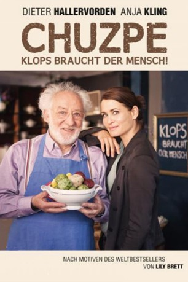

#10392 Chuzpe - Klops braucht der Mensch!
 
 IMDB-Wertung: 6.0 / 10
IMDB-Wertung: 6.0 / 10  Metascore: 0
Metascore: 0 
Schon als Jugendlicher hat der Holocaust-Überlebende Edek Rothwachs Deutschland den Rücken gekehrt und sich im australischen Melbourne ein Leben aufgebaut. Auch mit 80 Jahren steckt er noch voller Energie und so ist er nicht gerade begeistert, als seine Tochter Ruth ihn zu sich nach Berlin holen will, damit er seinen Lebensabend dort in Ruhe und der Nähe der Familie verbringen kann. Ein geordnetes Leben widerstrebt dem Rentner. Doch dann begegnet er bei einem Familienbesuch in Berlin der lebenslustigen Polin Zofia und ist hingerissen von ihr. Sie ist der Grund zum Bleiben, den Edek gebraucht hat. Also ist Australien Vergangenheit und eine Rückkehr kein Thema mehr. Ruth muss allerdings schon bald einsehen, dass der Alltag ihres Vaters keinesfalls beschaulich ausfällt. Der quirlige Senior wirbelt jede Menge Staub auf und sorgt unentwegt für Chaos. Er lässt sich auf eine Affäre mit Zofia ein und hilft seiner Liebsten sogar bei der Eröffnung ihres eigenen Lokals.
Jahr: 2015
Dauer: 86 Minuten
FSK: 0
Land: Deutschland Studio: Tivoli Film ProduktionTonspuren:
Untertitel:
Auflösung: 720p (1280x720) Größe: 2314 MB
Genre: Komödie
Regisseur: Isabel Kleefeld
Drehbuch: Lily Brett, Andrea Stoll
Soundtrack:
Darsteller:
- Oliver Broumis als Galerist Lachner
- Ole Eisfeld als Karl Berger
 Claudia Eisinger als Maxi
Claudia Eisinger als Maxi- Mélanie Fouché als Franziska Hoppen
 Dieter Hallervorden als Edek
Dieter Hallervorden als Edek- Mike Hoffmann als Uwe Meyer
- Ibrahima Sanogo als Taxifahrer
- Franziska Troegner als Zofia
- Mürtüz Yolcu als Nachbar
- Natalia Bobyleva als Valentina
- Silvina Buchbauer als PR Alex von Schönwald
- Esther Esche als Ulrike Krause
 Anja Kling als Ruth
Anja Kling als Ruth- Florentine Lahme als Lucia Seiters
- Katharina Palm als Nachbarin
- Barbara Philipp als Sonia
- Tilman Pörzgen als Zacharias
- Renate Serwotke als Reisebekanntschaft
- Vera Teltz als Helene Bocksberg
- Hans-Jochen Wagner als Georg
Datei: X:\2015(A-F)\Chuzpe - Klops braucht der Mensch! (2015, FSK0, 1280x720).mkv seit 04.01.2019
Festplatte: HD 2015(A-Z)
 Es gibt insgesamt 143 Filme in der Gruppe '2015(A-F)'
Es gibt insgesamt 143 Filme in der Gruppe '2015(A-F)'